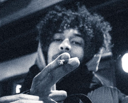
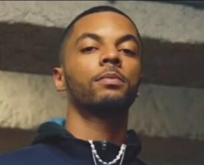
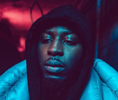
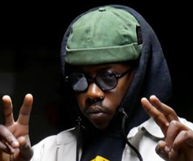
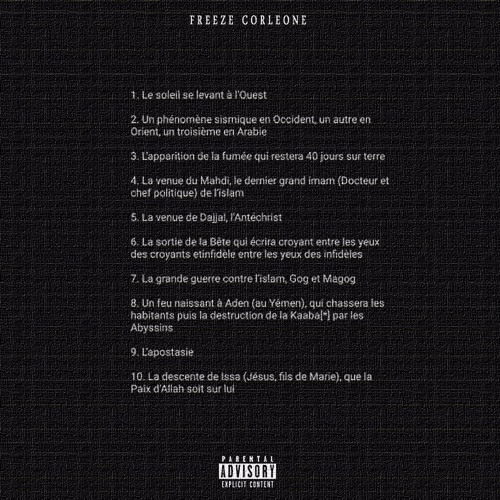
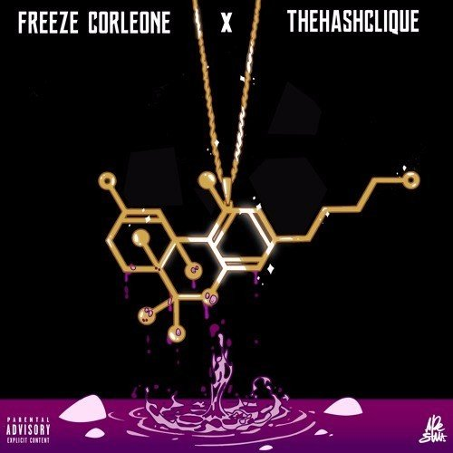
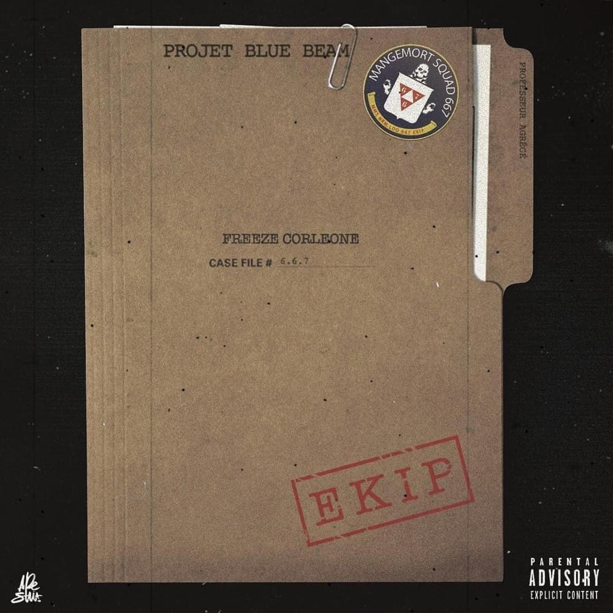

Yo, I'm Freeze
Freeze Corleone, pseudonyme de Issa Lorenzo Diakhaté,
né le 6 juin 1992 aux Lilas, en Seine-Saint-Denis, est un rappeur,
auteur et compositeur. Il est également le fondateur du collectif
667.
667 ekip.
Découvre Freeze Corleone
Le 667
Le collectif 667 est composé de plusieurs membres qui sont Freeze Corleone, Osirus Jack, Doc Ovg, Norsacce et Zuukou Mayzie.
Osirus 
Doc Ovg 
Norsacce 
Zuukou
Projets / Albums
Freeze Corleone a sorti de nombreux projets au cours de sa carrière. Nottament le Projet Blue Beam sorti en 2018 qui fera décoller sa carrière. Son plus gros succès reste néanmoins son derniere album intitulé La Menace Fantome qui a dépasser les 100 000 ventes.
F.D.T.(2016) 
THC(2017) 
PBB(2018)

LMF(2020)
Clip vidéo
Cette vidéo est le clip de Jeremy Lin extrait de
l'album Projet Blue Beam de Freeze Corleone.